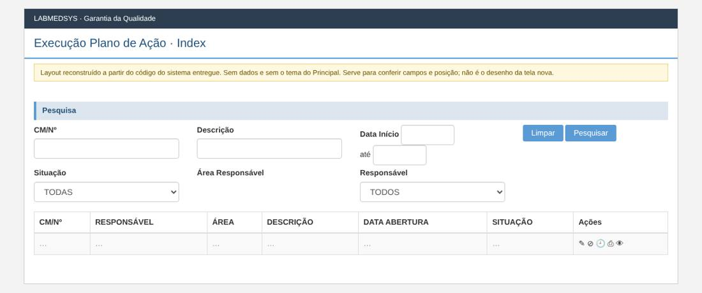
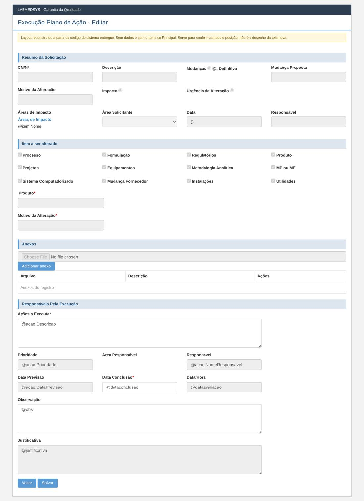
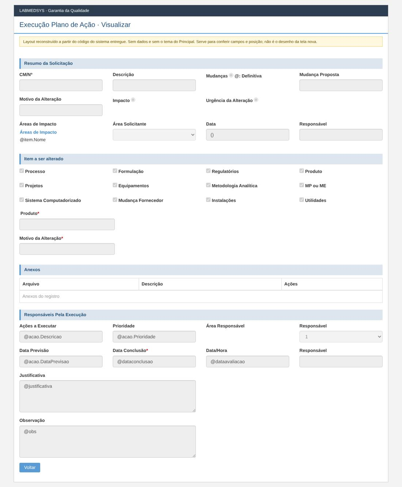

Menu: Garantia da Qualidade · Controle de Mudanças · Ficha: rascunho automático, a completar · Origem no sistema entregue: AvaliacaoPlanoAcao
As telas novas seguem o processo e as regras do sistema entregue, sem transcrever o que for falha de código, de conceito ou de campo mal colocado. Cada decisão na ficha é Manter, Corrigir ou Ideal depois.
Como é a tela no sistema entregue (layout reconstruído)
Reconstruído a partir do código das páginas do sistema entregue: mostra os campos, os rótulos, os asteriscos de obrigatório e a posição. Não tem dados e não usa o tema do Principal; os prints reais estão logo abaixo. Opções marcadas por padrão (caixas e botões de opção) são do código, não de dados.
Lista

Editar

Visualizar

Levantamento no código (rascunho automático)
A ficha completa desta tela ainda não foi escrita. Abaixo está o levantamento automático feito no código do sistema entregue: páginas, rotas, campos, modelos, regras de validação do servidor, situações e mensagens.
Menu: Garantia da Qualidade › Controle de Mudanças › Execução Plano de Ação
Origem no legado: área PlanoAcao, controlador AvaliacaoPlanoAcaoController (HSolutions.GQ.UI/Areas/PlanoAcao/Controllers/AvaliacaoPlanoAcaoController.cs)
Estado: rascunho automático do levantamento; a ficha completa fica em ../fichas/.
Este levantamento descreve o comportamento atual do sistema entregue, sem julgamento. A decisão do que manter, corrigir ou deixar para o ideal está na ficha completa.
1. Páginas da tela
| Página | Arquivo | Modelo |
|---|---|---|
| Editar | HSolutions.GQ.UI/Areas/PlanoAcao/Views/AvaliacaoPlanoAcao/Editar.cshtml | AvaliacaoPlanoAcaoMudancaModel |
| Imprimir | HSolutions.GQ.UI/Areas/PlanoAcao/Views/AvaliacaoPlanoAcao/Imprimir.cshtml | — |
| Index | HSolutions.GQ.UI/Areas/PlanoAcao/Views/AvaliacaoPlanoAcao/Index.cshtml | AvaliacaoPlanoAcaoIndexGetModel |
| Visualizar | HSolutions.GQ.UI/Areas/PlanoAcao/Views/AvaliacaoPlanoAcao/Visualizar.cshtml | AvaliacaoPlanoAcaoMudancaModel |
| VisualizarAvaliacaoPlanoAcao | HSolutions.GQ.UI/Areas/PlanoAcao/Views/AvaliacaoPlanoAcao/VisualizarAvaliacaoPlanoAcao.cshtml | AvaliacaoPlanoAcaoMudancaModel |
| _AvaliacaoPlanoAcaoForm | HSolutions.GQ.UI/Areas/PlanoAcao/Views/AvaliacaoPlanoAcao/_AvaliacaoPlanoAcaoForm.cshtml | AvaliacaoPlanoAcaoMudancaModel |
| _Resumo | HSolutions.GQ.UI/Areas/PlanoAcao/Views/AvaliacaoPlanoAcao/_Resumo.cshtml | AvaliacaoPlanoAcaoMudancaModel |
| _VisualizarAvaliacaoPlanoAcaoForm | HSolutions.GQ.UI/Areas/PlanoAcao/Views/AvaliacaoPlanoAcao/_VisualizarAvaliacaoPlanoAcaoForm.cshtml | AvaliacaoPlanoAcaoMudancaModel |
Partials usados: HSolutions.GQ.UI/Views/Shared/_Log.cshtml, HSolutions.GQ.UI/Areas/PlanoAcao/Views/Shared/_Resumo.cshtml, HSolutions.GQ.UI/Views/Shared/_GridAnexos.cshtml, HSolutions.GQ.UI/Views/Shared/_UploadArquivo.cshtml, HSolutions.GQ.UI/Views/Shared/_GridAnexosVisualizar.cshtml
2. Ações do controlador (rotas)
| Ação | Retorno | Parâmetros | Atributos | Linha |
|---|---|---|---|---|
| Index | ActionResult | 46 | ||
| Pesquisar | JsonResult | DateTime? dataInicio, DateTime? dataFim, int? indice, string cmn, string descricao, int situacao, int idarea, int idresponsavel | HttpPost | 63 |
| Editar | ActionResult | int id, int idsolicitacao | 163 | |
| VisualizarAvaliacaoPlanoAcao | ActionResult | int id, int idsolicitacao | 221 | |
| Visualizar | ActionResult | int id, int idsolicitacao | 280 | |
| EditarAvaliacaoPlanoAcao | JsonResult | AvaliacaoPlanoAcaoSalvarModel model | HttpPost | 336 |
| Imprimir | ActionResult | int idSolicitacao, int idAcao | 452 |
3. Campos, colunas e botões
Imprimir (HSolutions.GQ.UI/Areas/PlanoAcao/Views/AvaliacaoPlanoAcao/Imprimir.cshtml)
Títulos e seções: Imprimir (:7)
Index (HSolutions.GQ.UI/Areas/PlanoAcao/Views/AvaliacaoPlanoAcao/Index.cshtml)
Rótulos: CM/Nº (:24); Descrição (:29); Data Início (:34); Situação (:50); Área Responsável (:62); Responsável (:66)
| Tipo | Campo | Linha |
|---|---|---|
| input:text | txtCMN | 25 |
| input:text | txtDescricao | 30 |
| input:text | txtDataInicio | 36 |
| input:text | txtDataFim | 40 |
| select | cboSituacao | 51 |
| select | cboResponsavel | 67 |
Botões e atalhos: Limpar (:44); Pesquisar (:45)
Visualizar (HSolutions.GQ.UI/Areas/PlanoAcao/Views/AvaliacaoPlanoAcao/Visualizar.cshtml)
Rótulos: Ações a Executar (:88); Prioridade (:92); Área Responsável (:104); Responsável (:108); Data Previsão (:119); Data Conclusão * (:123); Data/Hora (:127); Responsável (:131); Justificativa (:137); Observação (:143)
| Tipo | Campo | Linha |
|---|---|---|
| input:hidden | hfId | 38 |
| input:hidden | Acao-Id | 86 |
| input:text | Acao-Descricao | 89 |
| input:text | Acao-Prioridade | 93 |
| select | Acao-IdResponsavel | 109 |
| input:text | Acao-DataPrevisao | 120 |
| input:text | Acao-DataConclusao | 124 |
| input:text | Acao-DataHora | 128 |
| input:text | Acao-Responsavel | 132 |
| textarea | Acao-Justificativa | 138 |
| textarea | Acao-Obs | 144 |
Botões e atalhos: Voltar (:153)
_AvaliacaoPlanoAcaoForm (HSolutions.GQ.UI/Areas/PlanoAcao/Views/AvaliacaoPlanoAcao/_AvaliacaoPlanoAcaoForm.cshtml)
Rótulos: Ações a Executar (:78); Prioridade (:85); Área Responsável (:97); Responsável (:101); Responsável (:109); Data Previsão (:117); Data Conclusão * (:121); Data/Hora (:125); Observação (:131); Justificativa (:139)
| Tipo | Campo | Linha |
|---|---|---|
| input:hidden | hfId | 21 |
| input:hidden | Acao-Id | 76 |
| input:text | Acao-Descricao | 79 |
| textarea | Acao-Descricao | 80 |
| input:text | Acao-Prioridade | 86 |
| select | Acao-IdResponsavel | 102 |
| input:text | Acao-Responsavel | 110 |
| input:text | Acao-DataPrevisao | 118 |
| input:text | Acao-DataConclusao | 122 |
| input:text | Acao-DataHora | 126 |
| textarea | Acao-Obs | 132 |
| textarea | Acao-Justificativa | 140 |
| input:button | btnSalvar | 151 |
Botões e atalhos: Voltar (:150); Salvar (:151)
_Resumo (HSolutions.GQ.UI/Areas/PlanoAcao/Views/AvaliacaoPlanoAcao/_Resumo.cshtml)
Rótulos: CM/Nº (:7); Descrição (:11); Mudanças (:15); Mudança Proposta (:29); Motivo da Alteração (:36); Impacto (:40); Urgência da Alteração (:54); Áreas de Impacto (:71); Área Solicitante (:92); Data (:99); Responsável (:103); Processo (:126); Formulação (:137); Regulatórios (:148); Produto (:159); Projetos (:170); Equipamentos (:181); Metodologia Analítica (:192); MP ou ME (:203); Sistema Computadorizado (:214); Mudança Fornecedor (:225); Instalações (:236); Utilidades (:247); Produto * (:253); Motivo da Alteração * (:264)
| Tipo | Campo | Linha |
|---|---|---|
| input:text | txtProduto | 258 |
| input:text | txtMotivoAlteracao | 265 |
_VisualizarAvaliacaoPlanoAcaoForm (HSolutions.GQ.UI/Areas/PlanoAcao/Views/AvaliacaoPlanoAcao/_VisualizarAvaliacaoPlanoAcaoForm.cshtml)
Rótulos: Ações a Executar (:72); Prioridade (:79); Área Responsável (:91); Responsável (:95); Responsável (:103); Data Previsão (:111); Data Conclusão * (:115); Data/Hora (:119); Observação (:125); Justificativa (:133)
| Tipo | Campo | Linha |
|---|---|---|
| input:hidden | hfId | 21 |
| input:hidden | Acao-Id | 70 |
| input:text | Acao-Descricao | 73 |
| textarea | Acao-Descricao | 74 |
| input:text | Acao-Prioridade | 80 |
| select | Acao-IdResponsavel | 96 |
| input:text | Acao-Responsavel | 104 |
| input:text | Acao-DataPrevisao | 112 |
| input:text | Acao-DataConclusao | 116 |
| input:text | Acao-DataHora | 120 |
| textarea | Acao-Obs | 126 |
| textarea | Acao-Justificativa | 134 |
Botões e atalhos: Voltar (:144)
_Log (HSolutions.GQ.UI/Views/Shared/_Log.cshtml)
Botões e atalhos: FECHAR (:7)
_Resumo (HSolutions.GQ.UI/Areas/PlanoAcao/Views/Shared/_Resumo.cshtml)
Rótulos: CM/Nº (:7); Descrição (:11); Mudanças (:15); Mudança Proposta (:29); Motivo da Alteração (:36); Impacto (:40); Urgência da Alteração (:54); Áreas de Impacto (:71); Área Solicitante (:92); Data (:99); Responsável (:103); Processo (:126); Formulação (:137); Regulatórios (:148); Produto (:159); Projetos (:170); Equipamentos (:181); Metodologia Analítica (:192); MP ou ME (:203); Sistema Computadorizado (:214); Mudança Fornecedor (:225); Instalações (:236); Utilidades (:247); Produto * (:253); Motivo da Alteração * (:264)
| Tipo | Campo | Linha |
|---|---|---|
| input:text | txtProduto | 258 |
| input:text | txtMotivoAlteracao | 265 |
_UploadArquivo (HSolutions.GQ.UI/Views/Shared/_UploadArquivo.cshtml)
Rótulos: Arquivo (:75); Descrição (:81); Status (:99); Observação (:112)
| Tipo | Campo | Linha |
|---|---|---|
| input:hidden | hdnArquivoId | 67 |
| input:file | txtArquivo | 76 |
| input:text | txtDescricaoArquivo | 82 |
| select | StatusMonitoramento | 100 |
| textarea | txtObservacao | 113 |
Botões e atalhos: Enviar (:87)
4. Modelos de dados da tela
AcaoModel (HSolutions.GQ.UI/Models/AcaoModel.cs)
| Tipo | Propriedade | Validação | Linha |
|---|---|---|---|
| int | Id | 9 | |
| string | Descricao | 10 | |
| int | Prioridade | 11 | |
| int | IdAreaResponsavel | 12 | |
| string | NomeAreaResponsavel | 13 | |
| int | IdResponsavel | 15 | |
| string | NomeResponsavel | 16 | |
| string | DataPrevisao | 18 | |
| string | DataConclusao | 19 | |
| string | Situacao | 20 | |
| int | IdAvaliacaoPlanoAcao | 22 | |
| int | IdPlanoAcao | 23 | |
| bool | Removido | 25 |
AvaliacaoPlanoAcaoIndexGetModel (HSolutions.GQ.UI/Areas/PlanoAcao/Models/AvaliacaoPlanoAcaoIndexGetModel.cs)
| Tipo | Propriedade | Validação | Linha |
|---|---|---|---|
| string | CMN | 17 | |
| List |
Areas | 19 | |
| IList |
Situacoes | 21 |
AvaliacaoPlanoAcaoIndexModel (HSolutions.GQ.UI/Areas/PlanoAcao/Models/AvaliacaoPlanoAcaoIndexModel.cs)
| Tipo | Propriedade | Validação | Linha |
|---|---|---|---|
| int | Id | 18 | |
| string | CMN | 19 | |
| string | Descricao | 20 | |
| string | Area | 21 | |
| int | IdResponsavel | 22 | |
| string | NomeResponsavel | 23 | |
| DateTime? | DataAbertura | 24 | |
| string | Situacao | 25 | |
| int | IdSolicitacao | 26 | |
| int | IdAvaliacaoPlanoAcao | 27 |
AvaliacaoPlanoAcaoMudancaModel (HSolutions.GQ.UI/Areas/PlanoAcao/Models/AvaliacaoPlanoAcaoMudancaModel.cs)
| Tipo | Propriedade | Validação | Linha |
|---|---|---|---|
| int | Id | 263 | |
| string | CMN | 264 | |
| string | Descricao | 265 | |
| string | MudancaProposta | 266 | |
| DateTime? | DataValidade | 267 | |
| string | MotivoAlteracao | 278 | |
| string | DescricaoItemProduto | 279 | |
| int | Item | 280 | |
| int | Impacto | 281 | |
| int | UrgenciaAlteracao | 282 | |
| int | IdAreaSolicitante | 283 | |
| string | NomeAreaSolicitante | 284 | |
| int | TipoMudanca | 285 | |
| IList |
Areas | 287 | |
| IList |
Items | 288 | |
| IList |
AreasImpacto | 290 | |
| IList |
AnexosParaSolicitacao | 292 | |
| IList |
AnexosParaPlanoAcao | 293 | |
| IList |
AnexosParaAvaliacaoPlanoAcao | 294 | |
| IList |
AnexosParaLiberacaoPlanoAcao | 295 | |
| IList |
AreasResponsaveisAvaliacao | 297 | |
| IList |
AcoesParaPlanoAcao | 299 | |
| string | Responsavel | 301 | |
| string | Observacao | 302 | |
| DateTime | DataHora | 303 | |
| AcaoModel | Acao | 304 | |
| AvaliacaoPlanoAcaoSalvarModel | AvaliacaoPlanoAcaoModel | 305 | |
| int | IdUsuarioResponsavelPreAvaliacaoMudanca | 307 | |
| string | NomeUsuarioResponsavelPreAvaliacaoMudanca | 308 | |
| string | NomeUsuarioResponsavelLiberacaoPlanoAcao | 309 | |
| string | JustificativaPreAvaliacaoMudanca | 310 | |
| string | ObservacaoPreAvaliacaoMudanca | 311 | |
| DateTime? | DataPreAvaliacao | 312 | |
| string | JustificativaLiberacaoPlanoAcao | 313 | |
| string | ObservacaoLiberacaoPlanoAcao | 314 | |
| string | DataLiberacaoPlanoAcao | 315 | |
| IList |
ItemsASeralterados | 317 |
AvaliacaoPlanoAcaoSalvarModel (HSolutions.GQ.UI/Areas/PlanoAcao/Models/AvaliacaoPlanoAcaoSalvarModel.cs)
| Tipo | Propriedade | Validação | Linha |
|---|---|---|---|
| int | Id | 16 | |
| int | IdAcao | 17 | |
| int | IdSolicitacao | 18 | |
| virtual DateTime? | DataConclusao | 19 | |
| virtual string | Observacao | 20 | |
| virtual string | Justificativa | 21 | |
| virtual DateTime? | DataAvaliacao | 22 | |
| virtual int | IdResponsavelAvaliacao | 23 | |
| virtual string | NomeResponsavelAvaliacao | 24 |
GridModel (HSolutions.GQ.UI/Models/GridModel.cs)
| Tipo | Propriedade | Validação | Linha |
|---|---|---|---|
| IEnumerable |
Source | 14 | |
| PaginacaoGridModel | Paginacao | 16 |
SolicitacaoMudancaSalvarModel (HSolutions.GQ.UI/Areas/RM/Models/SolicitacaoMudancaSalvarModel.cs)
| Tipo | Propriedade | Validação | Linha |
|---|---|---|---|
| int | Id | 261 | |
| string | CMN | 262 | |
| string | Descricao | 263 | |
| string | MudancaProposta | 264 | |
| DateTime? | DataValidade | 265 | |
| string | MotivoAlteracao | 276 | |
| string | DescricaoItemProduto | 277 | |
| int | Item | 278 | |
| int | Impacto | 279 | |
| int | UrgenciaAlteracao | 280 | |
| int | IdAreaSolicitante | 281 | |
| string | NomeAreaSolicitante | 282 | |
| int | TipoMudanca | 283 | |
| IList |
Areas | 285 | |
| IList |
AreasImpacto | 288 | |
| IList |
AnexosParaSolicitacao | 290 | |
| IList |
AnexosParaPlanoAcao | 291 | |
| IList |
AnexosParaAvaliacaoPlanoAcao | 292 | |
| IList |
AnexosParaLiberacaoPlanoAcao | 293 | |
| IList |
AreasResponsaveisAvaliacao | 295 | |
| IList |
AcoesParaPlanoAcao | 297 | |
| string | Responsavel | 299 | |
| string | Observacao | 300 | |
| DateTime | DataHora | 301 | |
| AcaoModel | Acao | 302 | |
| AvaliacaoPlanoAcaoSalvarModel | AvaliacaoPlanoAcaoModel | 303 | |
| int | IdUsuarioResponsavelPreAvaliacaoMudanca | 305 | |
| string | NomeUsuarioResponsavelPreAvaliacaoMudanca | 306 | |
| string | NomeUsuarioResponsavelLiberacaoPlanoAcao | 307 | |
| string | JustificativaPreAvaliacaoMudanca | 308 | |
| string | ObservacaoPreAvaliacaoMudanca | 309 | |
| string | DataPreAvaliacao | 310 | |
| string | JustificativaLiberacaoPlanoAcao | 312 | |
| string | ObservacaoLiberacaoPlanoAcao | 313 | |
| string | DataLiberacaoPlanoAcao | 314 | |
| bool | PodeAprovarPreAvaliacao | 316 | |
| bool | PodeReprovarPreAvaliacao | 317 | |
| bool | HabilitaBotaoFinalizar | 319 | |
| int? | IdRevisor | 321 | |
| string | NomeRevisor | 322 | |
| IList |
ItemsASeralterados | 324 | |
| int? | AnoControle | 325 | |
| string | DescricaoOutros | 327 |
UploadModel (HSolutions.GQ.UI/Models/UploadModel.cs)
| Tipo | Propriedade | Validação | Linha |
|---|---|---|---|
| string | Url | 43 | |
| string | PosCallback | 47 | |
| string | PreCallback | 51 | |
| IDictionary |
Status | 53 | |
| bool | ExibeObservacao | 54 |
5. Situação (estado) e histórico
- Pesquisar (:63)
- CONSULTA: PendenteLiberacaoPlanoAcao
- EditarAvaliacaoPlanoAcao (:336)
- CONSULTA: Concluido
- MUDA PARA: Concluido (:397)
- HISTÓRICO: inclui com histórico (:363), altera com histórico (:418), altera com histórico (:427)
6. Regras de validação do servidor
Cada linha é uma regra que o servidor confere ao gravar. A mensagem é a que o usuário vê.
| Validador | Quando recusa (condição) | Mensagem | Campo | Linha |
|---|---|---|---|---|
| AvaliacaoPlanoAcaoValidator | if (entity == null) | Entidade de domínio não pode ser nula. | — | 19 |
| AvaliacaoPlanoAcaoValidator | if (!avaliacaoPlanoAcao.DataConclusao.HasValue) | A Data de Conclusão é obrigatória. | DataConclusao | 29 |
| AvaliacaoPlanoAcaoValidator | if (avaliacaoPlanoAcao.DataConclusao < DataCriacaoSolicitacaoMudanca.Value.Date) | A Data de Conclusão não pode ser menor que a data da solicitação de mudança. | DataConclusaoMenor | 36 |
| AvaliacaoPlanoAcaoValidator | if (avaliacaoPlanoAcao.DataConclusao > DateTime.Now) | A Data de Conclusão não pode ser maior que a data atual. | DataConclusao | 42 |
7. Mensagens (servidor e navegador)
Nada encontrado.
Script HSolutions.GQ.UI/Areas/PlanoAcao/Script/AvaliacaoPlanoAcaoIndex.js — ações chamadas: actionBuscarResponsaveis, actionImprimir, actionPesquisar
Nada encontrado.
Script HSolutions.GQ.UI/Areas/PlanoAcao/Script/AvaliacaoPlanoAcaoSalvar.js — ações chamadas: actionCancelar, actionEditar, actionGetProduto, actionPreCondicoes, actionPreCondicoesParaAnexos, actionPreCondicoesParaImpacto, actionPreCondicoesParaItemASerAlterado, actionPreCondicoesParaUrgenciaAlteracao
| Mensagem do navegador | Linha |
|---|---|
| feitoo | 194 |
8. A completar na análise
- [ ] Regras de cada campo (obrigatório, tamanho, máscara, origem da lista).
- [ ] Quem pode ver e executar cada ação (funções de permissão).
- [ ] Lookups com outros módulos (Estoque, Produção, Principal).
- [ ] Anexos, relatórios (PDF) e notificações.
- [ ] Falhas conhecidas a replicar (inventário de telas e plano de testes).
- [ ] Casos de teste de aceite (plano de testes da GQ).